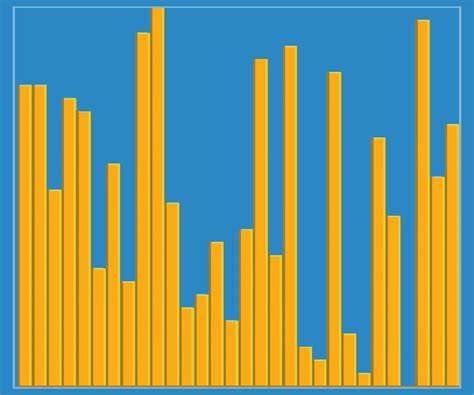

Introduction
Data sorting is a fundamental task in computer science and a crucial operation in numerous computer systems. It involves reorganizing a set of elements in a defined order, such as ascending or descending, based on a predefined criterion. This process not only enhances data readability and accessibility but also optimizes the performance of other algorithms, such as search algorithms, which operate more efficiently on sorted data.
Over time, various sorting methods have been developed, each with specific characteristics that make them more or less suitable depending on the situation. In this essay, we will thoroughly explore five of the most well-known sorting algorithms: Bubble Sort, Insertion Sort, Selection Sort, Merge Sort, and Quick Sort. Their history, functionality, detailed examples, and performance in different scenarios will be analyzed.
Bubble Sort
History: Bubble Sort is one of the oldest and simplest algorithms. It was introduced during the early days of computing when data processing was limited by rudimentary hardware. Although it is now considered inefficient, it is still used in educational contexts due to its simplicity and its ease in explaining basic concepts of algorithms and data structures.
Functioning: Bubble Sort compares adjacent pairs of elements in a list and swaps them if they are in the wrong order. This process is repeated for each element, moving the largest values to the end of the list as if they were "floating," similar to the movement of bubbles in a liquid.
- Compare the first and second elements.
- Swap them if they are out of order.
- Repeat for the subsequent pairs.
- Continue until no swaps are made in a complete pass.
Example:
- Compare 5 and 3 → [3, 5, 8, 4]
- Compare 5 and 8 → [3, 5, 8, 4]
- Compare 8 and 4 → [3, 5, 4, 8]
- Second pass: [3, 4, 5, 8] (the list is now sorted).
Complexity: Best: \(O(n)\), Worst: \(O(n^2)\), Average: \(O(n^2)\).
Insertion Sort
History: Insertion Sort is inspired by the natural method of sorting cards in a hand. It is intuitive and effective for small or nearly sorted lists. It has been widely used since the early days of programming due to its simplicity.
Functioning: Insertion Sort divides the list into two parts: a sorted part and an unsorted part. Elements from the unsorted part are extracted one by one and inserted into the correct position in the sorted part.
- Start with the second element as the reference.
- Compare it with elements in the sorted part.
- Insert it into the correct position.
- Repeat until all elements are sorted.
Example:
- Initial list: [7, 2, 4]
- Take 2 and compare it with 7 → [2, 7, 4]
- Take 4 and compare it with 7 → [2, 4, 7]
Complexity: Best: \(O(n)\), Worst: \(O(n^2)\), Average: \(O(n^2)\).
Selection Sort
History: Selection Sort was designed to illustrate basic sorting principles. Although it is not time-efficient, its implementation is straightforward, making it useful for teaching data structures and algorithms.
Functioning: Selection Sort finds the smallest element in each iteration and places it in its correct position. This process is repeated for the remaining elements.
- Find the smallest element in the list.
- Swap it with the first element.
- Repeat for the remaining elements.
Example:
- Initial list: [29, 10, 14, 37, 13]
- Find the smallest (10) → [10, 29, 14, 37, 13]
- Find the smallest (13) → [10, 13, 14, 37, 29]
Complexity: Best: \(O(n^2)\), Worst: \(O(n^2)\), Average: \(O(n^2)\).
Merge Sort

History: Merge Sort was created by John von Neumann in 1945. This algorithm introduced the idea of divide and conquer, marking a milestone in the development of efficient algorithms.
Functioning: Merge Sort divides the list into halves until each sublist contains a single element. Then, it merges the sorted sublists to produce the final result.
- Divide the list into two equal parts.
- Sort each part recursively.
- Merge the sorted parts.
Example:
- Initial list: [38, 27, 43, 3]
- Steps: Split: [38, 27], [43, 3] → Sort: [27, 38], [3, 43] → Merge: [3, 27, 38, 43]
Complexity: Best, Worst, Average: \(O(n \log n)\).
Quick Sort
History: Quick Sort was invented by Tony Hoare in 1960. It is one of the most efficient and widely used algorithms in practice.
Functioning: Quick Sort selects a pivot and organizes elements smaller than the pivot to the left and those larger to the right. This process is applied recursively to the sublists.
- Select a pivot.
- Divide the list into two parts based on the pivot.
- Sort each part recursively.
Example:
- Initial list: [8, 3, 1, 7]
- Pivot: 3 → [1, 3, 8, 7]
- Sublists: [1], [7, 8] → [1, 3, 7, 8]
Complexity: Best: \(O(n \log n)\), Worst: \(O(n^2)\), Average: \(O(n \log n)\).
Conclusion
Sorting algorithms are foundational to computer science, playing a vital role in data organization, analysis, and processing. Each algorithm has unique strengths and weaknesses that make it suitable for different scenarios, whether it's the simplicity of Bubble Sort and Selection Sort for educational purposes, the efficiency of Insertion Sort for small or nearly sorted datasets, or the robust performance of Merge Sort and Quick Sort for handling larger datasets.
Bubble Sort, despite its inefficiency for large datasets, remains an excellent tool for teaching fundamental concepts of algorithms. Insertion Sort, on the other hand, strikes a balance between simplicity and practicality, making it a reliable choice for scenarios involving smaller or partially sorted lists. Selection Sort’s straightforward methodology allows beginners to understand sorting mechanics, even though its time complexity limits its real-world applicability.
Merge Sort and Quick Sort demonstrate the power of divide-and-conquer strategies in sorting. Merge Sort excels in stability and predictable performance, especially for data that requires guaranteed sorting times. However, its additional space requirements can be a limitation. Quick Sort, with its in-place sorting capability and efficiency in average-case scenarios, has become the preferred choice in practical applications, especially when memory constraints and performance are critical considerations.
Beyond theoretical analysis, real-world applications often dictate the choice of a sorting algorithm. Factors such as data size, memory constraints, and specific requirements like stability or adaptability to nearly sorted datasets can determine which algorithm is most appropriate. Additionally, understanding the trade-offs between time complexity and implementation simplicity is essential for developers and
In conclusion, mastering sorting algorithms is not merely about learning their mechanics but also about understanding their optimal use cases and limitations. This knowledge empowers developers to write efficient and scalable software, ensuring that the chosen algorithm aligns with the specific requirements of their application. Sorting is not just a computational necessity but a gateway to deeper insights into algorithm design, analysis, and performance optimization.